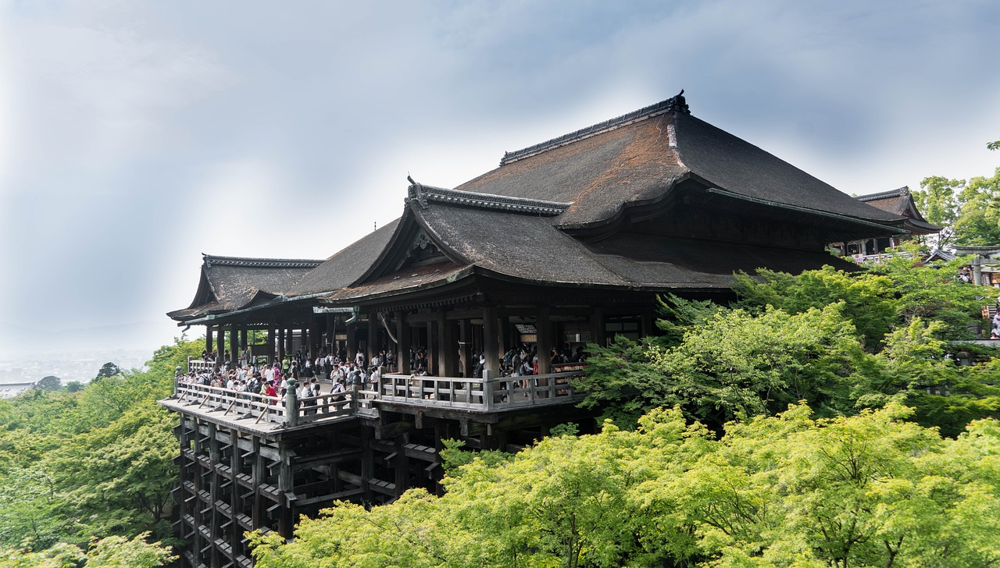
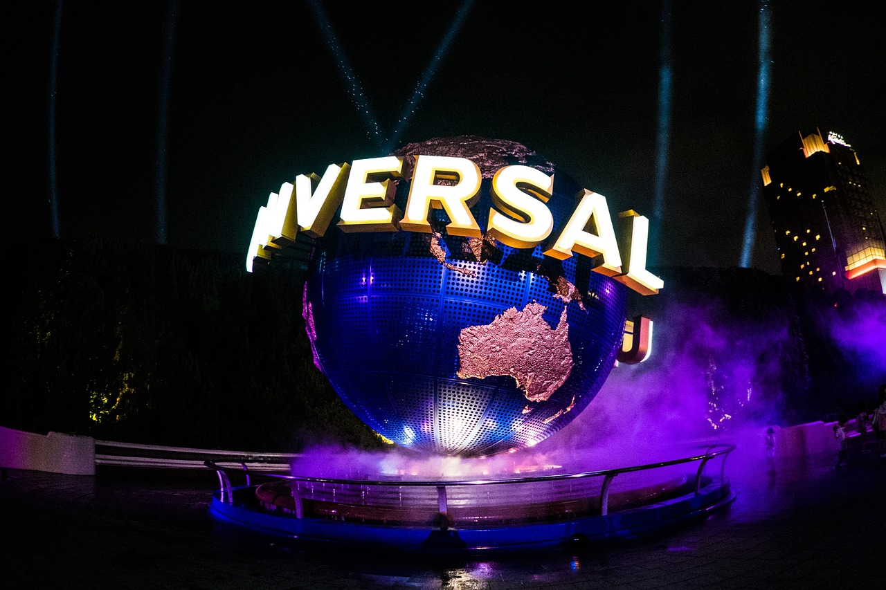
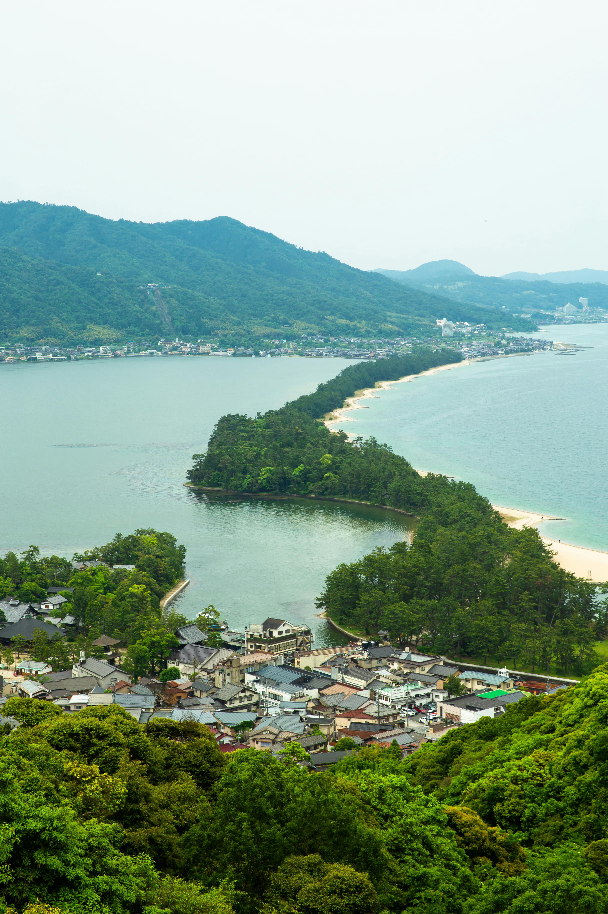

清水寺

清水寺（きよみずでら）は、京都府京都市東山区にある有名な仏教寺院です。
西暦778年に創建され、正式名称は「音羽山清水寺（おとわさん きよみずでら）」です。
本堂の舞台からは京都市内を一望でき、多くの観光客が訪れます。
「清水の舞台から飛び降りる」ということわざでも知られています。
1994年にはユネスコ世界遺産「古都京都の文化財」の一部として登録されました。
住所：〒605-0862 京都府京都市東山区清水１丁目２９４
ユニバーサル・スタジオ・ジャパン

ユニバーサル・スタジオ・ジャパン（USJ）は、大阪市此花区にあるテーマパークです。
2001年に開業し、ハリウッド映画を題材にしたアトラクションやショーが楽しめます。
ハリー・ポッターやミニオン、ジュラシック・パークなど、世界的に人気のある映画の世界を体験できることが特徴です。
毎年多くの国内外の観光客が訪れる、日本を代表するエンターテインメント施設の一つです。
住所：〒554-0031 大阪府大阪市此花区桜島２丁目１−３３
天橋立

天橋立（あまのはしだて）は、京都府宮津市にある自然地形で、日本三景の一つに数えられています。
長さ約3.6キロメートルの砂州（すなす）で、松の木が約5,000本生えています。
天橋立は、両岸にまたがって宮津湾を南北に結び、まるで天にかかる橋のように見えることからこの名前がつきました。
逆さから見ると天に舞う龍のように見えることで有名で、毎年多くの観光客が訪れる景勝地です。
住所：〒626-0001 京都府宮津市文珠